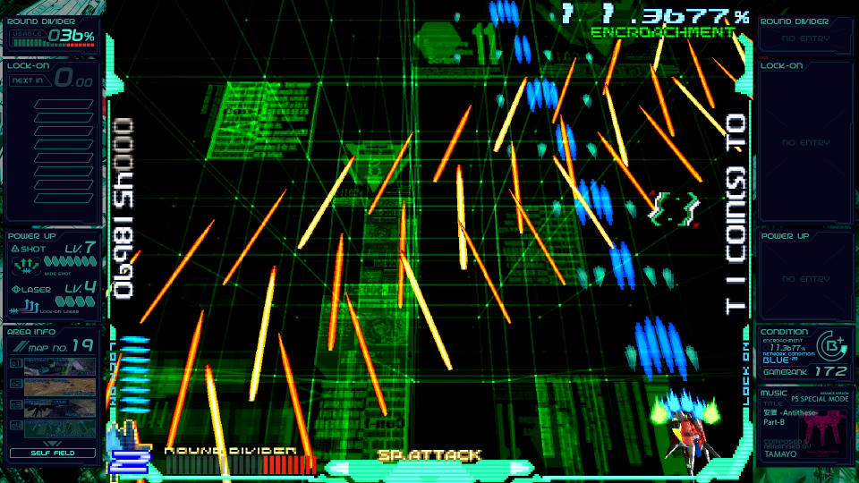
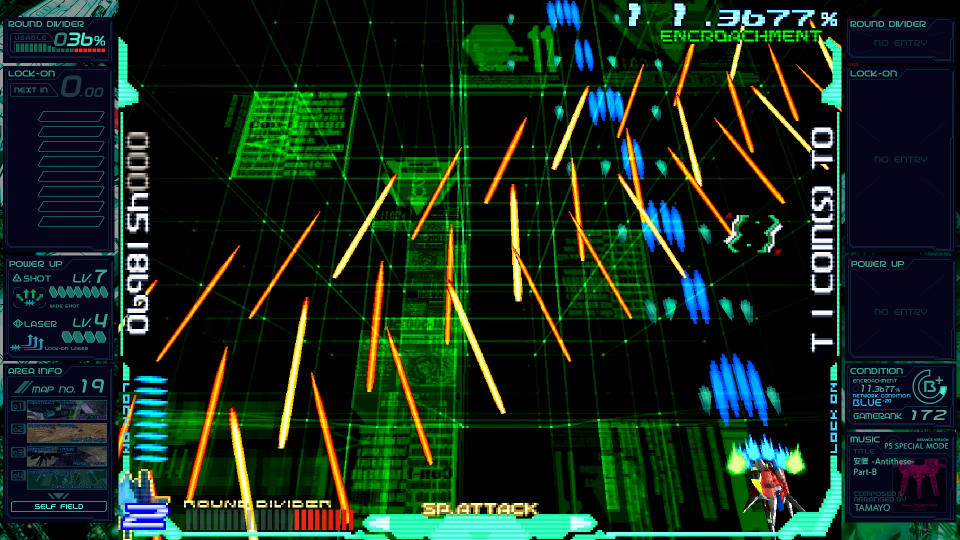
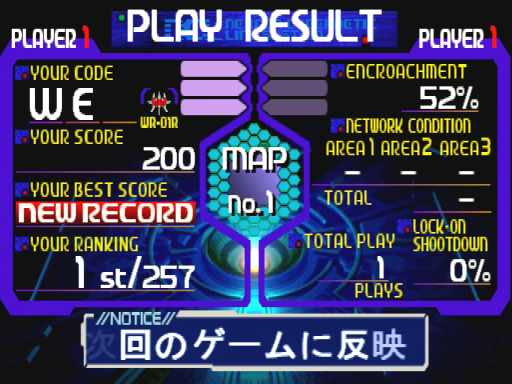
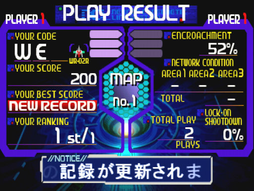
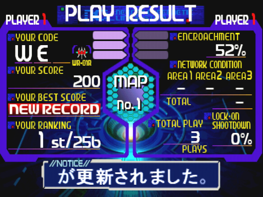

ユーザーデータ
このゲームではROMカードにプレイ状況を記録し、それによって隠し要素の解放やハイスコアの保存など、様々な恩恵が受けられます1。手順は以下の通りです。
- ユーザーネーム3文字＋パスワード1文字を入力します。使用可能な文字は、以下の48種類です。
ただし、ネーム部分が「全て空白」「全てK」「SEX」だとNGワードに抵触し、登録されません。- A～Z
- 0～9
- ?
- !
- /
-- (
- )
- :
- .
- ,
- "
- '
- 空白
- (既存データでプレイした場合のみ)まずマップ、続けて自機を選びます。
- プレイ終了後、ゲームオーバー画面の裏で情報がセーブされます2。
※ここから下は、ちょっとマニアックなお話です。慣れるまで気にしなくて構いません。
データと難易度の関係
本作の難易度は、ゲームランクだけでなくユーザーデータも影響しているようです。
これは、同じマップ・機体・攻撃で「初回プレイ(上)」と「全マップ開放済み・3号機出現済み・infinity条件成立(下)」を比べたものですが・・・ 

驚いた事に、ゲームランク自体は(1ミスしているにも関わらず)上の方が高くなっています。それでいて、攻撃は下の方が苛烈。
つまり「隠し要素の解放＝ランク上昇」ではなく「ランク＋解放で総合的に難易度が決まる」のだと考えられます。
ユーザーデータの上限は?
Wikipediaだと「64人」、ゲーメストは「256人」と、資料によってまちまちです。「超えた場合、古いデータから削除される」という、その基準も不明です。
そこで、手持ちの基板を使って確かめました。256回ユーザーデータを作って。
結果は、赤枠のユーザーが消えています。最初に登録した(はずの)「VAN」が健在なので、削除基準は最終プレイ日時が古い順ですね。
なお、ランキングにユーザーの消去が反映されるのは次の電源投入時からです。それまでは、消えたユーザーの名前もここに出続けます。

詳しくは下記にまとめていますが、以前ここに記した「3機体合わせて256枠」などという中途半端な仕様ではなく、256人全員が3機体分セーブできます。
順を追って見てみましょう。ここに「1号機で257人目が登録した」リザルト画面があります3。

ここで257人目のデータを使い、2号機でプレイします4。

データがセーブされたのを確かめ、この時1人目であるユーザー「C(空白)×3」を入力すると、しっかり読み出されています5。
もちろん、257人目を1号機でプレイしてみても総数は「256」。機体毎に上限まで保存できる事が分かります。

※注意：この段落は「レスリー探検隊 調査報告書」の初稿からVer.8で修正されるまで、ずっと誤った記述を載せていました。
掲載期間の長さを考慮し、以下に要約を記載します。大変申し訳ありません。
- ユーザーデータの上限
- ×："3機体で"256枠(つまり85人＋あまり1枠)
- ○：機体毎に256人(つまり256人×3機体＝768枠)
- 誤認識の理由
- 「リザルト画面のランキング」でユーザー数をカウントしたため
- 「ハイスコアが0点のユーザーはランキングの集計対象外」(＝ランキングの総数に含まれない)点を見落としていた
- 上記の点を踏まえて再検証
- 手持ちの基板1枚を初期化し、まっさらな状態からカウント
- 256回全てのプレイで「スコアを稼いで」潰したため、上記の問題を克服(＝ランキングの総数をカウンターとして使用可)
- 念のため256人分のユーザー名リストを作成し、プレイ毎に印を付けてダブルチェック
- 1号機で256人登録したのち、256人目を2号機でプレイ→一番古いユーザーデータは健在
- 結論として、ユーザーデータの上限は「256人×3機体」と確定
1. 公式サイトでは「GNet-Personaldata-Administer」としています。無理矢理だな! ↩
2. まず無いと思いますが、それまでにリセットしたりすると「解放した」事にはなりません ↩
3. 総数が257なのは、削除処理がゲームオーバー画面で実行されるからです。つまり、この画面までは「既存の256人＋今回作成した1人」で257人分存在します ↩
4. ちなみに下のメッセージ「おめでとうございます。あなたの記録が更新されました。」は「トップ10に入らなかったが、自分のハイスコアは更新した」時に見られるレアメッセージです ↩
5. 初回登録時にこのメッセージは表示されません ↩